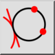
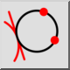
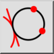
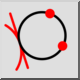

Tangering och 2 punkter
Verktygsfält / ikon:
 

Meny: Rita > Cirkel > Tangering och 2 punkter
Genväg: C, T, 1
Kommandon: circletangent2p | ct1
Detta är en automatisk översättning.
Verktygsfält / ikon:
 

Meny: Rita > Cirkel > Tangering och 2 punkter
Genväg: C, T, 1
Kommandon: circletangent2p | ct1
Ritar en cirkel som tangerar en enhet och går genom två punkter.